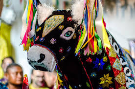
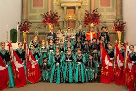
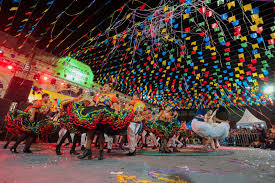

Aspectos Culturais e Folclore de Rondônia

Boi-Bumbá
Influenciado pelas tradições amazônicas, o Boi-Bumbá é uma festa popular com apresentações teatrais e musicais, nas quais personagens folclóricos representam o mito do boi. Esse evento é repleto de cores, danças e músicas regionais.

Festa do Divino Espírito Santo
Essa celebração religiosa é de origem portuguesa e foi adaptada pela população local. Envolve procissões, cantorias e distribuição de alimentos, além de danças tradicionais e celebrações comunitárias que destacam a fé e união dos moradores.

Quadrilhas e Festas Juninas
As festas juninas são celebradas em todo o estado com grande entusiasmo, misturando elementos das tradições nordestinas com a cultura local. As quadrilhas apresentam danças e trajes típicos, e as festas incluem comidas típicas e brincadeiras populares.